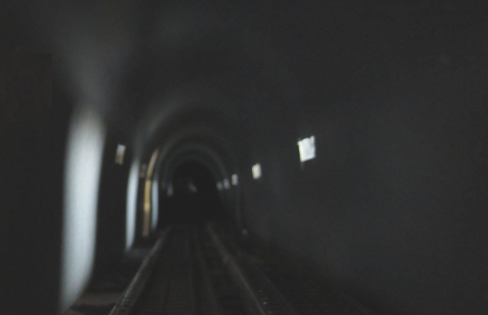

| västerut |
TOC |
österut |
index |
A33 |
Då och då går banan över små öar och kobbar. Genom att havsdjupet är under 10m kan vi kanske bygga sträckan som en banvall . Framme vid Trädgårdshäran börjar nästa tunnel.
Själva banan måste antagligen täckas på grund av snövirvlar som
driver in snö över spåret och på grund av att vid lämplig
temperatur förvandlas snön till is. Visst är lösningen en banvall
men är det en tunnel på en banvall. Om vi även tar i beaktande att
isfältet består av packis som drivs upp mot banvallen kan det
hända att på vintern är hela banan omgärdad av packisen.
Banan på detta avsnitt påverkas direkt av sydvästan och
stormcentran från samma håll. Mellan det öppna havet och banan
finns inget skydd av öar eller kobbar, en otäckt del isar ner på
ett ögonblick och höga vågor kommer lätt in i tunnlarna om det ej
åtgärdas.
Om banan istället byggs högt ovanom vattnet har vi kvar problemet med nedisning. Pack isen som pressar på mot bropelarna kan få dem att välta eller åtminstone att röra på sig varefter banan blir okörbar. Kraftiga sydväststormar med medföljande nedisning kommer att tynga ner banan så att bropelarna kanske ger efter. Till slut på allt detta har vi ett allvarligt buller problem. Kvar är även ingångarna till tunnlarna i bägge ändorna och frågan om blir backen upp på bron för banan för brant om spåren är nedisade.
En "täckt banval" eller ett "rör" behöver dock ej vara mörk eftersom i taket väl kan finnas fönster/ luckor som släpper in solljus om solen syns. Detta arrangemang minskar ej på säkerheten mot snö och is men förbättrar säkerheten på själva banan. I vilken mån får dessa takfönster vara öppna, helt beroende på vad som under stormar och under vintern kan komma in. Temperaturen i "röret" är den samma som ute. Vatten som finns i "röret" fryser till under vintern. Utöver detta finns det även risk för radioaktiv radon gas från tunnelöppningarna. Själva "röret" måste vädras för att få bort både radon gas och övrigt utsläpp. Att köra diseltåg på Kapellskär-Karis banan är definitivt något som bör undvikas.
Resultatet av dessa "säkerhetsåtgärder" är att utsikten från tåget i flesta fall är tröstlös , vill passageraren se Åbolands, Ålands och Roslagens skärgårdar föreslås att passageraren bokar plats på färjorna i stället.
